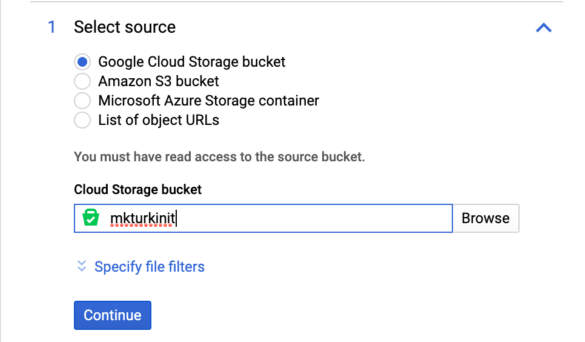

MkTurk Install & Setup Guide
Table of Contents
- Setup Firebase Web App Platform
- Create a Firebase Project
- Add a Webapp
- Setup Local Node Environment
- Install Firebase CLI
- Install Google Cloud SDK
- Import Google Cloud Storage Files
- Setup MkTurk
- Clone MkTurk Repository
- Install Modules (recommended)
- Serve MkTurk web app using Firebase Hosting
- Initialize Firebase on Local Environment
- Initialize Firestore Database
- Read the Guide
1. Setup Firebase Web App Platform
MkTurk uses Google Firebase for database, storage and backend service needs. Therefore it is imperative that Firebase is setup correctly. In this section, we will guide you through the steps of getting Firebase up and running!
Create a Firebase Project
Navigate to Google Firebase, then click

Once you click, you will be guided through another set of configuration prompt. Name your app as 'mkturk' and check the box to setup Firebase Hosting.
Add a Webapp
Now that you've created a Firebase project, you need to add a Webapp since MkTurk is a web-based software. Click on the Web icon (pointed by the red arrow in the image below) on the Firebase project landing page.
Setup Local Node Environment
Before continuing to install Firebase CLI, make sure that you have nvm,
node and npm installed as you will need a local Node environment
to install and use Firebase, gsutil and gcloud CLIs. The following guide
has been adapted for MacOS and Linux users.
The recommended way to install Node environment is through the use of nvm
('Node Version Manager'). You can think of nvm as a conda for
Node that allows you to install, setup and manage multiple versions of Node.
To check if you have a working installation of nvm, open up your terminal and run:
$ command -v nvm
If you have nvm, the above command should output
nvm
If you do not have nvm, please visit
nvm for MacOS/Linux and follow their installation steps.
Now that you have installed nvm, install the latest Node v10 by running
$ nvm install 10
$ nvm use 10nvm, node and npm
Installing Firebase CLI
Run
$ npm install -g firebase-tools
Installing Google Cloud SDK
Follow this guide from Google
Import Google Cloud Storage Files
For MkTurk to work out of the box, it is necessary that you have the directory structure and names that we currently have in place. To get you started, we have created a public Google Cloud Storage Bucket that you can import into your project.
- Navigate to Google Cloud Platform's Data Transfer console.
- On the left sidebar, locate the tab named "Transfer Service | cloud" and click.
- Once on the page named "Transfer Service for cloud data", press "Create Transfer Job" and you will be taken through three steps to complete the transfer.
- In "Select source", make sure Google Cloud Storage Bucket is toggled and type "mkturkinit" in the field as shown in the image and click Continue. 
-
In "Select Destination", specify your Storage bucket. Make sure that a storage
bucket is specified and not a bucket preceded by "staging." Click Select
and continue to the next step.

- Here you can specify when to execute the data transfer. You can specify "immediately, one time" and proceed.
2. Setup MkTurk
Clone MkTurk Repository
To clone IssaLab's distribution of MkTurk, run:
$ git clone https://github.com/issalab/mkturk.git
Install Modules (recommended)
Simply running MkTurk does not require additional module installations. However, you may come to realize that updating, viewing and managing parameter files, images, scenes and datafiles are quite cumbersome when having to use Firestore and Google Cloud Storage on separate windows or tabs. Thus, we include a webapp called MkFiles that centralizes all data viewing, editing and updating operations. To build this webapp, run the following sequence of commands in the terminal.
- Navigate to Firebase Console and click
icon on the upper left hand corner. Doing so should
reveal Firebase SDK snippet. Toggle 'Config' and copy the the
firebaseConfigobject. - Open
~/mkturk/src/mkfiles/src/main.tsand replace the existingfirebaseConfigobject with the one you just copied. Save and exit. - Run the following code snippet
$ cd ~/mkturk/src/mkfiles $ npm install $ npx webpack
~/mkturk/public/mkfiles and check to see that
mkfiles.js was added.
3. Serve MkTurk web app using Firebase Hosting
Initialize Firebase
At this point you are ready to initialize Firebase.
- Log into Firebase using your Google account by running. Follow the prompt on your terminal.
$ firebase login - Test that the CLI is properly installed and that the project you created is associated
with your Google account. Run the following command:
$ firebase projects:list - If the above commands were successful you can now initialize your Firebase project.
Run the following commands:
You should see a prompt as shown in the following image.$ cd ~/mkturk $ firebase init Make sure to toggle Firestore, Functions, Hosting, Storage and Remote Config
and continue with the rest of the prompt.
Make sure to toggle Firestore, Functions, Hosting, Storage and Remote Config
and continue with the rest of the prompt.
-
Congrats on getting this far! You are almost done. Make sure you are still in the root
of the project folder (i.e
~/mkturk) and run the following command:
$ firebase deploy
You should now be able to direct to your-project-id.firebaseapp.com/mkturk or your-project-id.web.app/mkturk and start using MkTurk!
If you would like to test it locally before deploying to the web, you can always
$ firebase serve
and direct to localhost:5000/
4. Initialize Firestore Database
At this point you are almost ready to start using MkTurk. The final step
requires that you initialize Firestore the way that we have setup. Direct to
localhost:5000/initfirestore and follow the prompt on the screen. Once you click
"Initialize Firestore" and Firestore is correctly initialized, you should see additional
messages on the page. Follow instructions on the page. After you have done so, you can
nagivate to localhost:5000/mkturk and start using MkTurk.
5. Read the MkTurk Guide!
Read the MkTurk guide to learn more.